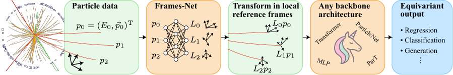

Make any network Lorentz-equivariant
Given my favourite non-equivariant network, or backbone, how can I make it Lorentz-equivariant?
{kind=link}
The LLoCa workflow is outlined above, and extends the flow of data in a non-equivariant network in three steps:
Predict local frames with small Lorentz-equivariant network. We first use a small Lorentz-equivariant network to predict a set of vectors for each particle. Next, these vectors are orthonormalized to obtain four vectors forming an adaptive local coordinate system, and these vectors are then identified as the rows of the Lorentz transformation that transforms from the global to the particles local reference frame. The lloca package combines these steps into the Frames-Net, which supports different Lorentz-equivariant networks and several variants of creating the local reference frames for the Lorentz group and its subgroups, see API Reference. This step is a pre-processing, and does not require any modification of the backbone architecture.
Canonicalize particle data, i.e. transform particle data into the local reference frame using the previously predicted local reference frames, before processing them with the network. Finally, the neural network output has to be transformed back into the global frame again. The transformation behaviour of the network inputs and outputs depends on their representation, which is typically a mix of scalar and vector representations. The lloca package uses
TensorRepsspecify the representations, andTensorRepsTransformto perform the transformations. This step is a pre and post-processing, and does not require any modification of the backbone architecture.Tensorial message-passing finally requires small modifications in the backbone architecture, if it uses message passing such as graph networks and transformers. Because the latent features are expressed in different frames for the individual particles, they should be transformed from the sender to the receiver frames according to the learned local frame transformations. The representation of the latent features is a hyperparameter that should contain at least one vector to allow the network to meaningfully communicate geometric information. We detail the concrete steps required for the LLoCa-X networks used in our publications below.
Implementing tensorial message-passing
When using local canonicalization, we find that it is necessary to implement tensorial message-passing in the backbone architecture to benefit from canonicalization. Without tensorial message-passing, i.e. only scalar latent representations, we find poor performance, even below the non-equivariant baseline, see Table 1, 2, 4 in the HEP paper.
If you do not want to commit to modifying your backbone architecture yet, you can get a
feeling for the gains of LLoCa by testing its global canonicalization variant.
Global canonicalization uses a single global frame for the whole event, instead of
seperate frames for each particle, and therefore does not require tensorial message-passing.
In our experiments, we found that global canonicalization slightly improves performance compared
to the non-equivariant baseline, but does not reach the performance of local canonicalization,
see Table 1 in the HEP paper.
Global canonicalization is implemented in the Frames-Net classes, e.g. LearnedPDFrames,
by setting is_global=True.
The following pages contain the git diff to add tensorial message-passing for the backbone
networks used in the original LLoCa publications, to provide assistance for anyone wishing
to implement tensorial message-passing in their favourite backbone architecture.